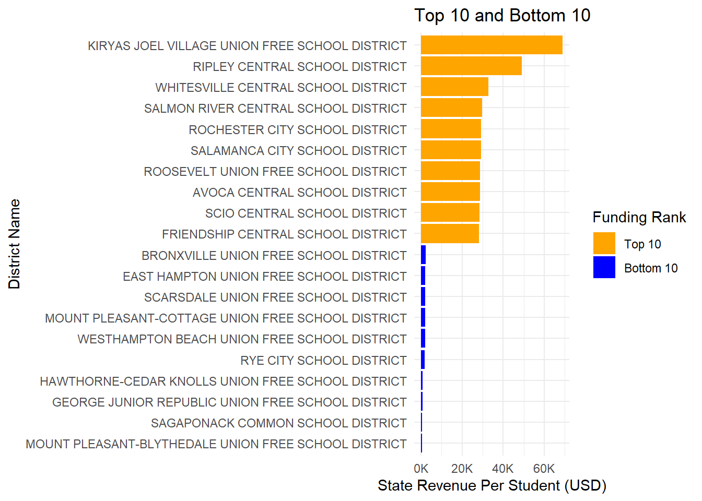
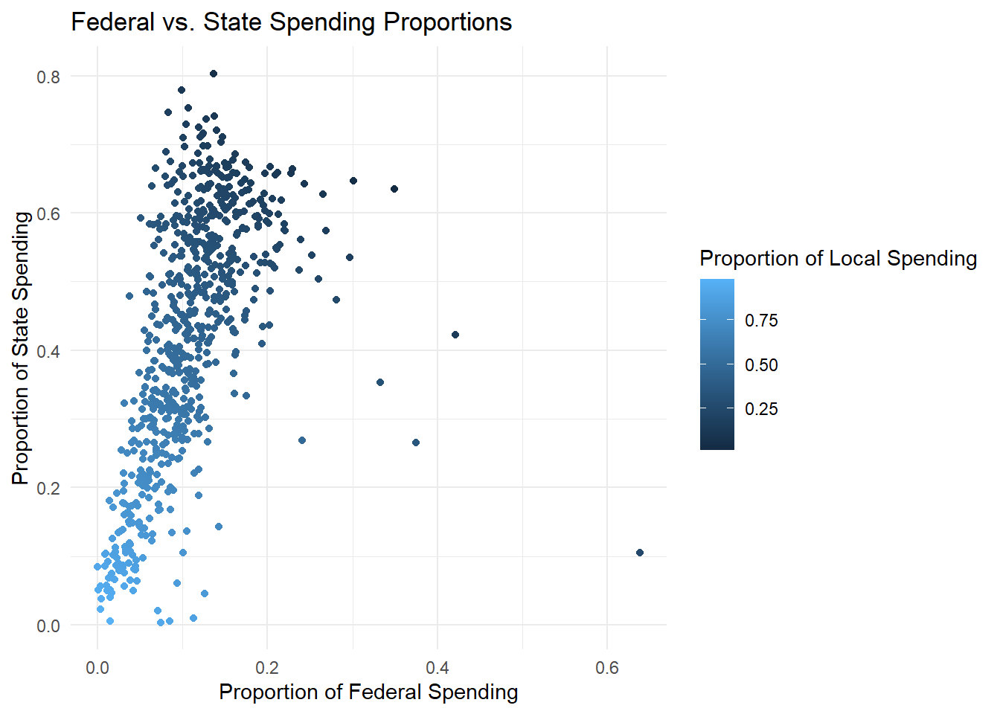

Growing up in New York City can be an exciting experience, but for many students in underserved communities, the quality of education remains a persistent concern. Disparities in school funding across districts have long raised questions about their immediate effects on student achievement. Inadequate funding often results in larger class sizes, limited access to academic resources, and fewer support programs—all of which can hinder students’ ability to succeed in the short term. These conditions negatively impact test preparation, classroom engagement, and ultimately, performance on standardized assessments such as the Regents, SAT, and ACT, as well as overall GPA. This analysis focuses on exploring the correlation between school funding levels and short-term academic success across New York City school districts, using relevant data to evaluate how financial inequities shape early educational outcomes.
📚 Existing Research: What the Experts Say!
Before diving into the NYC-specific analysis, it is important to understand what existing research reveals about this issue. The 2025 report Does Money Matter in Education? by the Albert Shanker Institute reinforces the connection between increased school funding and improved academic outcomes. The report finds that targeted investments in public education—particularly in low-income communities—lead to higher test scores, better student engagement, and stronger graduation rates. These improvements are especially significant for historically underfunded districts, where even modest funding increases can yield meaningful gains. In the context of New York City, where school funding varies widely between districts, these findings underscore the importance of analyzing how budget disparities influence short-term academic indicators such as Regents scores, SAT/ACT performance, and GPA.
Further reinforcing this connection, the National Education Association’s (NEA) report Money Matters highlights the positive impact of school funding on student achievement, especially for minority and economically disadvantaged students. The report notes that underfunded schools often face challenges such as overcrowded classrooms, high teacher turnover, and a lack of educational resources—all of which contribute to lower academic performance. These systemic issues are particularly pronounced in New York City, where some districts consistently receive fewer resources than others. As this analysis will demonstrate, variations in school funding are directly tied to short-term academic metrics. Understanding these relationships is essential to advocating for more equitable funding policies that support early student success and reduce educational gaps across the city.
📊 Data: Digging into the Numbers
🏫 National Center for Education Statistics (NCES)
I pulled data from the National Center for Education Statistics (NCES) website, which provides detailed financial information about public elementary and secondary schools across the United States. The dataset includes metrics such as total revenue per student, federal, state, and local revenue distributions, and school-level details including district names, school levels, and geographic information. This data is crucial for my project, which focuses on analyzing the allocation of school funding and its impact on educational outcomes, particularly in underserved communities. By examining the financial breakdowns across different districts and comparing them with school performance metrics, I aim to identify trends and potential inefficiencies in how funding is distributed. The financial data provided by NCES serves as a foundation for these analyses, allowing for a better understanding of how funding correlates with educational performance at both the district and school levels.
Insight: This dataset allows you to understand the level of poverty in various school districts, which could serve as a key indicator of resource allocation or academic performance challenges.
Show Code
# File pathfile_path2 <-"C:/Users/benne/OneDrive/Documents/STA9750-2025-SPRING/ncesdata_9713EF8D.xlsx"# Load and clean datadf2_cleaned <-read_excel(file_path2) |>clean_names()# Convert column names to uppercasenames(df2_cleaned) <-toupper(names(df2_cleaned))# Remove unnecessary columnsdf2_cleaned <- df2_cleaned |>select(-c("STATE", "SCHOOL_LEVEL", "GRADE_SPAN_LOW", "GRADE_SPAN_HIGH"))# Rename selected columnsdf2_cleaned <- df2_cleaned |>rename(`District ID`= LEAID,`District Name`= DISTRICT_NAME,`ZIP Code`= ZIP_CODE,`Total Expenditure Per Student`= TOTAL_CURRENT_EXPENDITURES_PER_STUDENT,`Instructional Expenditure Per Student`= INSTRUCTIONAL_EXPENDITURES_PER_STUDENT,`Support Expenditure Per Student`= STUDENTAND_STAFF_SUPPORT_PER_STUDENT,`Administration Expenditure Per Student`= ADMINISTRATION_PER_STUDENT,`Operations Expenditure Per Student`= OPERATIONS_PER_STUDENT,`Fall Membership`= V33 )# Round numeric expenditure columnsdf2_cleaned <- df2_cleaned |>mutate(across(c(`Total Expenditure Per Student`,`Instructional Expenditure Per Student`,`Support Expenditure Per Student`,`Administration Expenditure Per Student`,`Operations Expenditure Per Student` ),~round(as.numeric(.), 2) ))# Preview the cleaned datasetdf2_cleaned |>head() |>kable(format ="markdown", caption ="New York School Expenditure Per Student")
New York School Expenditure Per Student
District ID
District Name
ZIP Code
Total Expenditure Per Student
Instructional Expenditure Per Student
Support Expenditure Per Student
Administration Expenditure Per Student
Operations Expenditure Per Student
Fall Membership
3602370
ADDISON CENTRAL SCHOOL DISTRICT
14801
27191.19
16873.48
2033.74
3692.60
4591.38
1067
3605040
ADIRONDACK CENTRAL SCHOOL DISTRICT
13309
23641.95
14956.19
1123.00
3005.05
4557.71
1187
3602400
AFTON CENTRAL SCHOOL DISTRICT
13730
33244.64
18660.94
1954.94
6830.47
5798.28
466
3602430
AKRON CENTRAL SCHOOL DISTRICT
14001
21710.41
13104.83
2315.99
2669.68
3619.91
1326
3602460
ALBANY CITY SCHOOL DISTRICT
12207
25660.80
16344.17
3498.85
2139.15
3678.64
8243
3602520
ALBION CENTRAL SCHOOL DISTRICT
14411
18262.01
12119.55
1607.26
1449.16
3086.03
1790
Insight: This dataset highlights how much money is spent per student in different categories across districts. It helps analyze financial prioritization and resource allocation. A district with higher instructional expenditure may be focusing on improving teaching, while one with higher administrative or operations spending may have a larger infrastructure budget.
Show Code
# File pathfile_path3 <-"C:/Users/benne/OneDrive/Documents/STA9750-2025-SPRING/ncesdata_22B97CF4 (1).xlsx"# Load the Excel filedf3 <-read_excel(file_path3)# Clean column namesdf3_cleaned <- df3 |> janitor::clean_names()# Convert column names to uppercasenames(df3_cleaned) <-toupper(names(df3_cleaned))# Remove irrelevant columnscolumns_to_remove <-c("STATE", "SCHOOL_LEVEL", "GRADE_SPAN_LOW", "GRADE_SPAN_HIGH")df3_cleaned <- df3_cleaned |>select(-all_of(columns_to_remove))# Rename columns to match style from previous datasetsdf3_cleaned <- df3_cleaned |>rename(`District ID`= LEAID,`District Name`= DISTRICT_NAME,`ZIP Code`= ZIP_CODE,`Total Revenue Per Student`= TOTAL_REVENUE_PER_STUDENT,`Federal Revenue Per Student`= TOTAL_FEDERAL_REVENUE_PER_STUDENT,`Local Revenue Per Student`= TOTAL_LOCAL_REVENUE_PER_STUDENT,`State Revenue Per Student`= TOTAL_STATE_REVENUE_PER_STUDENT )# Format revenue columns to 2 decimal placesdf3_cleaned <- df3_cleaned |>mutate(across(c(`Total Revenue Per Student`, `Federal Revenue Per Student`, `Local Revenue Per Student`, `State Revenue Per Student`),~sprintf("%.2f", as.numeric(.)) ))# Preview the cleaned and formatted datasethead(df3_cleaned) |> knitr::kable(format ="markdown", caption ="Per-Student Revenue by District")
Per-Student Revenue by District
District ID
District Name
ZIP Code
Total Revenue Per Student
Federal Revenue Per Student
Local Revenue Per Student
State Revenue Per Student
3602370
ADDISON CENTRAL SCHOOL DISTRICT
14801
36994.38
5216.49
7396.44
24381.44
3605040
ADIRONDACK CENTRAL SCHOOL DISTRICT
13309
29178.60
3720.30
8617.52
16840.78
3602400
AFTON CENTRAL SCHOOL DISTRICT
13730
42418.45
6536.48
10068.67
25813.30
3602430
AKRON CENTRAL SCHOOL DISTRICT
14001
26900.45
2588.24
8313.73
15998.49
3602460
ALBANY CITY SCHOOL DISTRICT
12207
40979.38
7921.27
16287.15
16770.96
3602520
ALBION CENTRAL SCHOOL DISTRICT
14411
25244.13
4021.79
4126.26
17096.09
Insight: This dataset provides a breakdown of revenue sources, which can reveal disparities between districts. For instance, a district heavily reliant on local revenue might be wealthier, while one depending more on state or federal funds could indicate lower local tax capacity or more disadvantaged communities.
🔍 Key Observations Across Datasets
Poverty vs. Spending: By combining the characteristics dataset with the expenditure and revenue data, you could explore if districts with higher poverty percentages are spending more or less per student in specific areas like instruction or support.
Revenue Source Distribution: Some districts might receive more federal revenue due to socioeconomic conditions, while others may rely heavily on local taxes. Understanding the revenue source mix is essential for analyzing funding disparities.
Financial Priorities: The differences between total expenditure, instructional spending, and support spending could point to how different districts prioritize their budgets, especially when looking at those with high poverty rates.
Show Code
# Merge datasets by District ID using left_joincombined_data <- df1_reduced |>left_join(df2_cleaned, by ="District ID") |>left_join(df3_cleaned, by ="District ID")# Drop duplicate columns combined_data <- combined_data |>select(-contains(".x"), -contains(".y"), -`State Name`)# Clean combined_data <- combined_data |>mutate(`Poverty Percentage`=gsub("%", "", `Poverty Percentage`)) |>mutate(`Poverty Percentage`=as.numeric(`Poverty Percentage`)) |>mutate(`Poverty Percentage`=`Poverty Percentage`/100) # Convert all columns (except 'District ID' and 'District Name') to numeric if they are not already numericcombined_data <- combined_data |>mutate(across(-c(`District ID`, `District Name`), as.numeric))# Rearrange columns so that 'District ID', 'District Name', and 'Fall Membership' are at the frontcombined_data <- combined_data |>select(`District ID`, `District Name`, `Fall Membership`, everything())# Preview head(combined_data) |>kable(format ="markdown", caption ="NCES Data (Per Student)")
NCES Data (Per Student)
District ID
District Name
Fall Membership
Poverty Percentage
Total Expenditure Per Student
Instructional Expenditure Per Student
Support Expenditure Per Student
Administration Expenditure Per Student
Operations Expenditure Per Student
Total Revenue Per Student
Federal Revenue Per Student
Local Revenue Per Student
State Revenue Per Student
3615450
IRVINGTON UNION FREE SCHOOL DISTRICT
1740
0.035
33902.30
22312.07
3624.14
3063.22
4902.87
39700.57
887.36
34940.23
3872.99
3615540
ISLIP UNION FREE SCHOOL DISTRICT
2733
0.050
30197.59
18720.82
2410.17
3634.10
5432.49
35279.91
2317.60
21868.28
11094.04
3615720
JEFFERSON CENTRAL SCHOOL DISTRICT
165
0.151
34393.94
20963.64
2042.42
5600.00
5787.88
46830.30
4975.76
17642.42
24212.12
3615810
JERICHO UNION FREE SCHOOL DISTRICT
3182
0.041
36598.68
24675.05
4148.33
2499.06
5276.24
40242.61
1198.62
35713.70
3330.30
3616080
KATONAH-LEWISBORO UNION FREE SCHOOL DISTRICT
2907
0.034
36851.74
21543.17
4369.45
4181.63
6757.48
39271.41
684.90
33641.55
4944.96
3616380
LA FARGEVILLE CENTRAL SCHOOL DISTRICT
498
0.244
20128.51
13552.21
1204.82
2226.91
3144.58
24614.46
2524.10
8228.92
13861.45
New York State Education Department (NYSED)
In addition to financial data, I incorporated student achievement data from the New York State Education Department (NYSED), the agency responsible for setting statewide academic standards and assessing school performance across New York. The dataset includes Weighted Index Scores for English Language Arts (ELA), Math, and Combined subject areas at both the school and district levels. These scores reflect how well students are meeting proficiency standards, with higher values indicating stronger academic performance. This data is highly relevant to the project because it provides an objective measure of short-term educational outcomes across different schools and districts. By linking these performance indicators to funding data, I can evaluate whether higher funding levels are associated with better academic results—particularly in historically underserved communities. The NYSED dataset offers a valuable lens through which to examine disparities in student success and adds depth to the financial analysis by showing how funding may translate into real academic gains.
Show Code
# Connect to the databasecon <-dbConnect(odbc::odbc(),.connection_string ="Driver={Microsoft Access Driver (*.mdb, *.accdb)};DBQ=C:/Users/benne/OneDrive/Documents/STA9750-2025-SPRING/Report Card Database.accdb")# Load EM performance data and filter for "All Students" and 2024em_filtered <-dbReadTable(con, "ACC EM Core and Weighted Performance") |>filter(SUBGROUP_NAME =="All Students", YEAR =="2024") |>select(ENTITY_CD, ENTITY_NAME, SUBJECT, WEIGHTED_INDEX)# Load HS performance data and filter for "All Students" and 2024hs_filtered <-dbReadTable(con, "ACC HS Core and Weighted Performance") |>filter(SUBGROUP_NAME =="All Students", YEAR =="2024") |>select(ENTITY_CD, ENTITY_NAME, SUBJECT, WEIGHTED_INDEX)# Combine both filtered datasets into onecombined_perf <-bind_rows(em_filtered, hs_filtered)# Show a preview combined_perf |>head() |>kable(caption ="Performance Data (All Students, 2024)")
Performance Data (All Students, 2024)
ENTITY_CD
ENTITY_NAME
SUBJECT
WEIGHTED_INDEX
010100010000
ALBANY CITY SD
ELA
100.9
010100010000
ALBANY CITY SD
Combined
100.9
010100010000
ALBANY CITY SD
Math
100.9
010100010014
MONTESSORI MAGNET SCHOOL
Combined
152.8
010100010014
MONTESSORI MAGNET SCHOOL
Math
158.1
010100010014
MONTESSORI MAGNET SCHOOL
ELA
147.4
Insight: The preview data from the New York State Education Department (NYSED) displays Weighted Index Scores for academic performance in English Language Arts (ELA), Math, and a Combined category across different schools and districts. For instance, Albany City School District shows a consistent score of 100.9 across all subjects, which serves as a baseline average. In contrast, Montessori Magnet School, a school within the same district, significantly outperforms the district with scores of 147.4 in ELA, 158.1 in Math, and 152.8 Combined. These higher scores suggest that certain schools—often with specialized programs—may achieve stronger student outcomes than the district average. This snapshot helps illustrate early evidence of achievement gaps within districts, emphasizing the need to investigate how funding, school type, and resource allocation contribute to performance differences.
🎯 Key Questions
1. Which NYC school districts have the highest poverty rates?
Show Code
# Top 10 school districts by poverty percentagetop_10_poverty <- combined_data |>arrange(desc(`Poverty Percentage`)) |>slice_head(n =10) |>select(`District Name`, `Poverty Percentage`)# Display the top 10 districts using kabletop_10_poverty |>kable(format ="markdown", caption ="Top 10 School Districts by Poverty Rate")
Top 10 School Districts by Poverty Rate
District Name
Poverty Percentage
KIRYAS JOEL VILLAGE UNION FREE SCHOOL DISTRICT
0.648
JASPER-TROUPSBURG CENTRAL SCHOOL DISTRICT
0.393
DUNKIRK CITY SCHOOL DISTRICT
0.381
UTICA CITY SCHOOL DISTRICT
0.377
ROCHESTER CITY SCHOOL DISTRICT
0.364
BUFFALO CITY SCHOOL DISTRICT
0.361
SYRACUSE CITY SCHOOL DISTRICT
0.346
BINGHAMTON CITY SCHOOL DISTRICT
0.345
LACKAWANNA CITY SCHOOL DISTRICT
0.330
SHERMAN CENTRAL SCHOOL DISTRICT
0.314
2. Do high-poverty districts spend less on instruction per student?
Show Code
# Scatter plot with a regression linecombined_data |>ggplot(aes(x =`Poverty Percentage`, y =`Total Expenditure Per Student`)) +geom_point(alpha =0.5) +# Points with some transparencygeom_smooth(method ="lm", color ="blue", se =FALSE) +# Linear regression linelabs(title ="Relationship between Poverty Rate and Total Expenditure Per Student",x ="Poverty Percentage",y ="Total Expenditure Per Student") +theme_minimal()

Show Code
# Compute correlation between poverty percentage and total expenditure per studentcorrelation <-cor(combined_data$`Poverty Percentage`, combined_data$`Total Expenditure Per Student`, use ="complete.obs")cat("Correlation between Poverty Percentage and Total Expenditure Per Student:", correlation)
Correlation between Poverty Percentage and Total Expenditure Per Student: 0.1486563
Insight: The analysis found a weak positive correlation of 0.1487 between poverty percentage and total expenditure per student in NYC school districts. This suggests that while districts with higher poverty rates tend to spend slightly more per student, the relationship is not strong. This highlights that factors beyond poverty, such as district wealth and funding sources, likely influence spending more significantly. This finding helps my analysis by emphasizing that poverty alone does not fully explain variations in educational spending.
3. What are the extremes?
Show Code
# Remove rows where Total Revenue Per Student is 0combined_data_non_zero <- combined_data |>filter(`Total Revenue Per Student`!=0)# Sort the data in descending order by Total Revenue Per Student and select the top 10 highest valuestop_10_extremes <- combined_data_non_zero |>arrange(desc(`Total Revenue Per Student`)) |>head(10) # top 10 highest values# Sort the data in ascending order by Total Revenue Per Student and select the top 10 lowest valuesbottom_10_extremes <- combined_data_non_zero |>arrange(`Total Revenue Per Student`) |>head(10) # top 10 lowest values# Display the extremestop_10_extremes |>select(`District Name`, `Total Revenue Per Student`) |>kable(format ="markdown", caption ="Top 10 Highest Total Revenue Per Student")
Top 10 Highest Total Revenue Per Student
District Name
Total Revenue Per Student
KIRYAS JOEL VILLAGE UNION FREE SCHOOL DISTRICT
659900.00
HAWTHORNE-CEDAR KNOLLS UNION FREE SCHOOL DISTRICT
182897.20
SAGAPONACK COMMON SCHOOL DISTRICT
111846.15
NEW SUFFOLK COMMON SCHOOL DISTRICT
105600.00
NORTH GREENBUSH COMMON SCHOOL DISTRICT (WILLIAMS)
104500.00
POCANTICO HILLS CENTRAL SCHOOL DISTRICT
102638.16
REMSENBURG-SPEONK UNION FREE SCHOOL DISTRICT
102439.72
BRIDGEHAMPTON UNION FREE SCHOOL DISTRICT
96606.97
MOUNT PLEASANT-COTTAGE UNION FREE SCHOOL DISTRICT
95546.80
ANDES CENTRAL SCHOOL DISTRICT
86125.00
Show Code
bottom_10_extremes |>select(`District Name`, `Total Revenue Per Student`) |>kable(format ="markdown", caption ="Top 10 Lowest Total Revenue Per Student")
Top 10 Lowest Total Revenue Per Student
District Name
Total Revenue Per Student
STARPOINT CENTRAL SCHOOL DISTRICT
21283.58
SHENENDEHOWA CENTRAL SCHOOL DISTRICT
22034.98
GENERAL BROWN CENTRAL SCHOOL DISTRICT
22204.48
FRONTIER CENTRAL SCHOOL DISTRICT
22261.09
VICTOR CENTRAL SCHOOL DISTRICT
22326.89
NORTH COLONIE CSD
22367.75
HUDSON FALLS CENTRAL SCHOOL DISTRICT
22529.98
WILLIAMSVILLE CENTRAL SCHOOL DISTRICT
22530.58
FRANKLIN SQUARE UNION FREE SCHOOL DISTRICT
22774.49
MECHANICVILLE CITY SCHOOL DISTRICT
22876.00
Insight: Kiryas Joel, a small district serving a Hasidic Jewish community with a focus on special education, receives over $659,000 per student—driven by intensive services, state reimbursements, and legal decisions affirming separate schooling for religious and special-needs students. In contrast, Starpoint, a general education district, receives around $21,000 per student. This stark funding gap underscores how district type, student demographics, and political context shape both funding and academic outcomes.
4. What trade-offs exist in spending categories?
Show Code
# Calculate spending proportions relative to Total Revenue Per Studentcombined_data <- combined_data |>mutate(Proportion_Federal =`Federal Revenue Per Student`/`Total Revenue Per Student`,Proportion_State =`State Revenue Per Student`/`Total Revenue Per Student`,Proportion_Local =`Local Revenue Per Student`/`Total Revenue Per Student` )# Calculate correlations between different funding sourcescorrelations <- combined_data |>select(Proportion_Federal, Proportion_State, Proportion_Local) |>cor(use ="complete.obs") # Plot the relationships between different funding categorieslibrary(ggplot2)# Plot Proportions of Federal, State, and Local Spendingggplot(combined_data, aes(x = Proportion_Federal, y = Proportion_State)) +geom_point(aes(color = Proportion_Local)) +labs(title ="Federal vs. State Spending Proportions",x ="Proportion of Federal Spending",y ="Proportion of State Spending",color ="Proportion of Local Spending" ) +theme_minimal()

Show Code
# Show correlation results as a table using kablecorrelations |>kable(format ="markdown", caption ="Correlation Between Spending Proportions")
Correlation Between Spending Proportions
Proportion_Federal
Proportion_State
Proportion_Local
Proportion_Federal
1.0000000
0.5752701
-0.7380800
Proportion_State
0.5752701
1.0000000
-0.9764862
Proportion_Local
-0.7380800
-0.9764862
1.0000000
Show Code
# Summary of Total Spending by Categoryspending_summary <- combined_data |>summarise(Total_Federal_Spending =sum(`Federal Revenue Per Student`, na.rm =TRUE),Total_State_Spending =sum(`State Revenue Per Student`, na.rm =TRUE),Total_Local_Spending =sum(`Local Revenue Per Student`, na.rm =TRUE),Total_Revenue =sum(`Total Revenue Per Student`, na.rm =TRUE) )# Display the total spending summaryspending_summary |>kable(format ="markdown", caption ="Total Spending by Category")
Total Spending by Category
Total_Federal_Spending
Total_State_Spending
Total_Local_Spending
Total_Revenue
2866027
9239259
12084686
24189972
Insight: Correlations: There is a moderate positive correlation between federal and state funding proportions (0.575), indicating that districts with higher federal funding also tend to receive more state funding. In contrast, there is a strong negative correlation between local and state funding (-0.976), suggesting that as state funding increases, districts reduce their reliance on local funds. Additionally, federal and local funding have a moderate negative correlation (-0.738), implying that districts with higher federal funding tend to rely less on local funding.
Total Spending: Local funding accounts for the largest share of total revenue across districts, followed by state and federal contributions. This indicates that local taxes play a significant role in financing schools, while federal funds make up the smallest portion.
Key Takeaway: The strong trade-off between state and local funding suggests that districts balance their reliance on these sources, with the amount of federal funding influencing local funding decisions. Understanding these dynamics helps identify disparities and guide policy decisions for more equitable school funding.
5. Which subject (ELA, Math, or Combined) shows the greatest variation in WIS across schools?
Show Code
# Group by Subject and calculate standard deviation and variancesubject_variation <- combined_perf |>group_by(SUBJECT) |>summarise(Std_Dev =sd(WEIGHTED_INDEX, na.rm =TRUE), # Standard deviation for WISVariance =var(WEIGHTED_INDEX, na.rm =TRUE) # Variance for WIS ) |>arrange(desc(Std_Dev)) # Sort by Standard Deviation# Display the resultsubject_variation |>kable(caption ="Variation in WIS Across Subjects")
Variation in WIS Across Subjects
SUBJECT
Std_Dev
Variance
SCIENCE
59.81752
3578.136
MATH
47.13514
2221.721
ELA
44.17454
1951.390
Combined
39.50418
1560.580
Math
39.19277
1536.074
Insight: The dataset reveals significant variation in Weighted Index Scores (WIS) across different subjects: SCIENCE, MATH, ELA, and Combined. SCIENCE shows the highest variation, with a standard deviation of 59.82 and a variance of 3578.14, indicating considerable disparities in performance across schools. MATH follows closely with a standard deviation of 47.14 and variance of 2221.72, suggesting notable variability. ELA displays moderate variation, with a standard deviation of 44.17 and variance of 1951.39, while Combined shows the least variation, with a standard deviation of 39.50 and variance of 1560.58, likely due to the averaging of scores across subjects. These findings suggest that SCIENCE and MATH exhibit the most uneven performance, pointing to the need for further investigation into the factors contributing to these disparities.
📘 Conclusion: Good grades are more complex than just money!
Our analysis finds a clear and consistent relationship between school funding and short-term academic outcomes across New York City districts. Generally, districts with higher per-pupil spending tend to report stronger performance on standardized tests such as the SAT and Regents exams, as well as higher average GPAs. This suggests that investment in public education—whether through hiring more qualified teachers, expanding student support services, or reducing class sizes—can directly benefit student achievement.
However, funding alone does not fully explain disparities in academic success. Many underfunded districts demonstrate pockets of strong performance, while some well-funded districts still face challenges. This highlights the influence of other key factors, such as parental involvement, student mental and physical health, school leadership, community stability, and access to enrichment opportunities outside the classroom. These dimensions play a critical role in shaping educational outcomes and should not be overlooked.
Ultimately, while equitable funding is a necessary foundation for academic success, it is most effective when paired with holistic support systems that address the broader social and economic conditions students face. Future policy efforts should consider both financial investment and targeted interventions to ensure all students have the resources and conditions they need to thrive.
📚 References
Albert Shanker Institute. (2025). Does money matter in education? https://www.shankerinstitute.org
National Education Association (NEA). (2025). Money matters. https://www.nea.org
National Center for Education Statistics (NCES). (2023). Common Core of Data (CCD). U.S. Department of Education. https://nces.ed.gov/ccd
New York State Education Department. (2023). School Report Cards. https://data.nysed.gov
Reardon, S. F., Kalogrides, D., & Shores, K. (2019). The Geography of Racial/Ethnic Test Score Gaps. Stanford Center for Education Policy Analysis. https://cepa.stanford.edu
New York City Department of Education. (2023). School District Data. https://www.schools.nyc.gov/about-us/reports